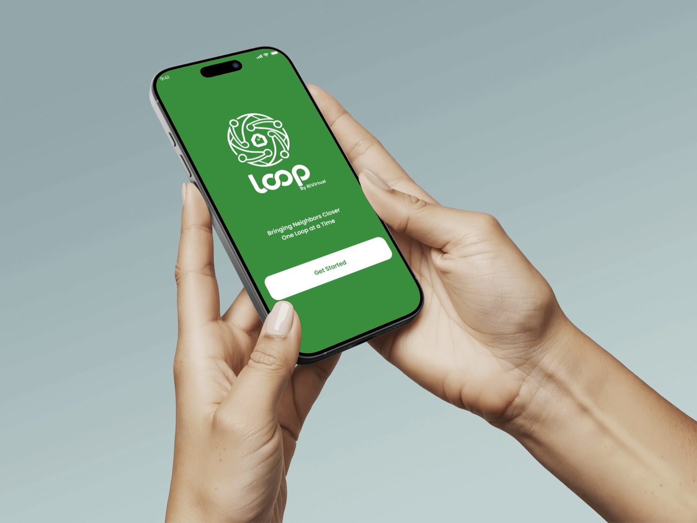
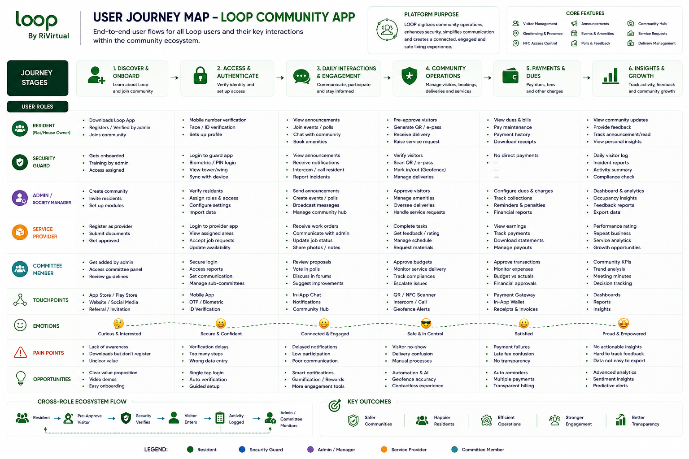
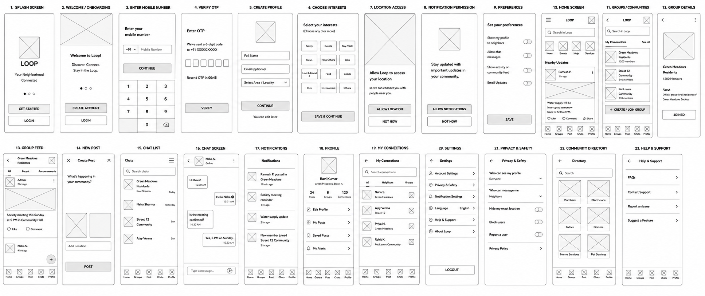
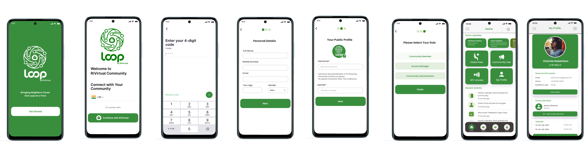
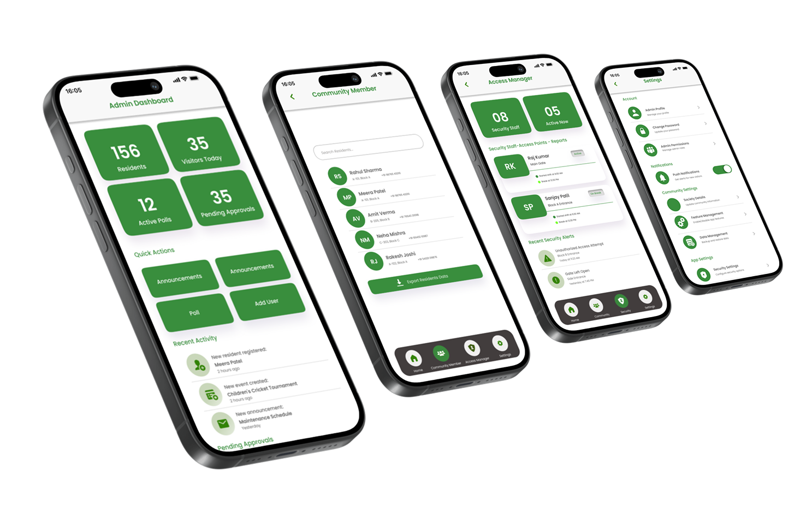
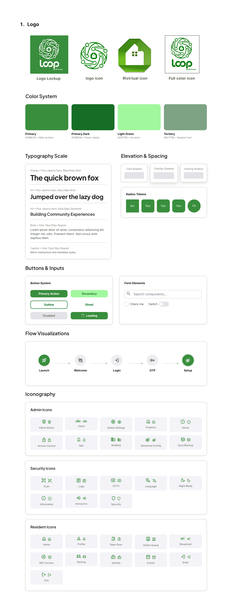
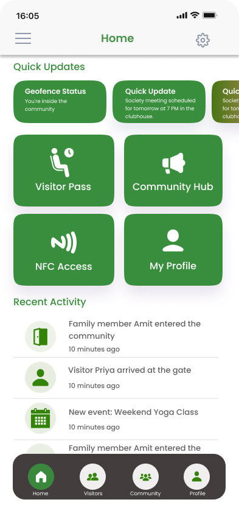
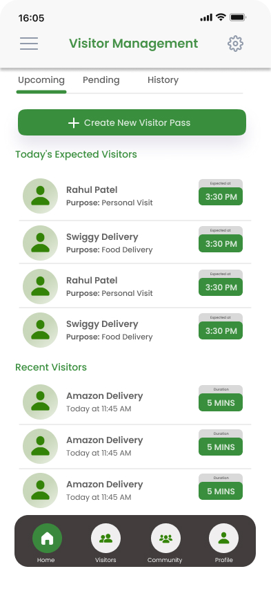
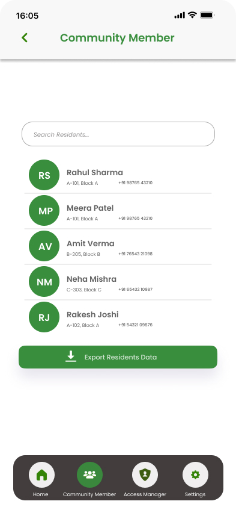

Loop —
communities connected.

Gated societies without a digital soul
Apartment complexes and gated communities run on fragmented tools — WhatsApp groups for visitors, paper logs for security, and no single place for residents, managers, and guards to stay aligned.
Loop needed to solve a multi-stakeholder problem from scratch: residents managing guests and daily life, security teams monitoring access in real time, and community managers running engagement programs — all within one mobile-first experience.
The product had to support NFC access control, geofencing-based presence, visitor pass workflows, and role-specific dashboards — with no existing design system, no established IA, and no prior product to iterate on. This was a true 0 → 1 build.
From PRD to launch-ready mobile UI
I authored the full product requirements document, information architecture, and user journeys before a single high-fidelity screen was drawn — ensuring every workflow had a clear owner and outcome.
Six core workflows emerged: authentication and onboarding, community hub and engagement, visitor management with digital access passes, NFC-based entry, security operations dashboards, and resident profile management. Each was mapped end-to-end, then translated into mobile screens with a cohesive design system.
Early mockups explored login flows, map-based screens, and multi-screen compositions to validate the visual direction before committing to the full 34-screen library. The design system — typography, color, components, and spacing — was built alongside the screens so the product could scale beyond launch.
Community ecosystem map
End-to-end user journey connecting residents, visitors, security, and community management — click to enlarge.

Wireframes & early screen explorations
Low-fidelity wireframes and mid-fi explorations used to validate layout, flows, and security workflows before high-fidelity delivery.



Mobile components built for scale
Typography, color tokens, spacing, and component library designed alongside the 34-screen mobile experience — ready for engineering handoff and future feature expansion.

One app, every stakeholder
Loop transforms gated societies into connected digital ecosystems — where residents manage guests, security teams monitor access, and community managers drive engagement from a single, beautifully designed mobile experience.
The home screen anchors daily activity with quick access to community features. Login and OTP flows provide secure, frictionless entry. The community hub centralizes events, polls, and resident engagement. Visitor management lets residents issue and scan digital access passes, while NFC access enables tap-to-enter at gates and lobbies.
Security dashboards give guards real-time visibility into residents, visitors, and access events. Profile and settings screens round out the experience with notification preferences and account management — all built on a complete mobile design system ready for development handoff.
Mobile screens & design system

Home Login
Login Community Hub
Community Hub
Visitor Pass Flow NFC Access
NFC Access Access Pass
Access Pass Security Dashboard
Security Dashboard
Residents My Profile
My Profile Design System
Design SystemDrag or scroll to explore · Click any screen to enlarge
Tap any screen to view full size
A product conceived, documented, and designed
Loop went from a question — what if your apartment complex had a soul? — to a launch-ready mobile product with full documentation, user flows, and a complete design system.
Residents gain a single app for guests, community life, and access control. Security teams get dedicated operational dashboards. Community managers can run engagement programs without juggling multiple tools. The 34+ screen library and design system provide a clear blueprint for engineering and future feature expansion.
- Authored full PRD, IA, and user journeys for a smart community ecosystem
- Designed NFC access, geofencing, visitor management & security dashboards
- Built launch-ready mobile UI with a complete design system
- Delivered 6+ core workflows from concept through high-fidelity screens
Full case study document
Download the complete Loop case study — covering visitor flows, NFC access, resident engagement, security operations, and the mobile design system.